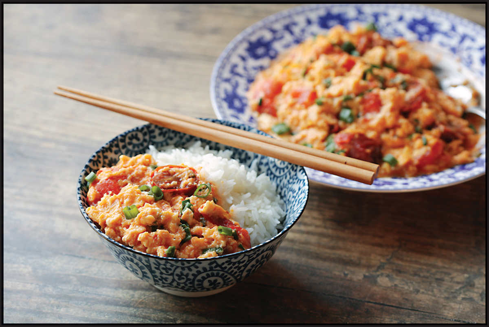
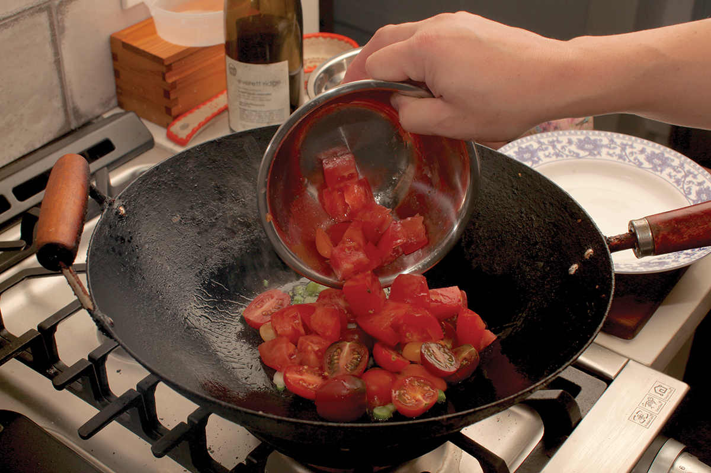
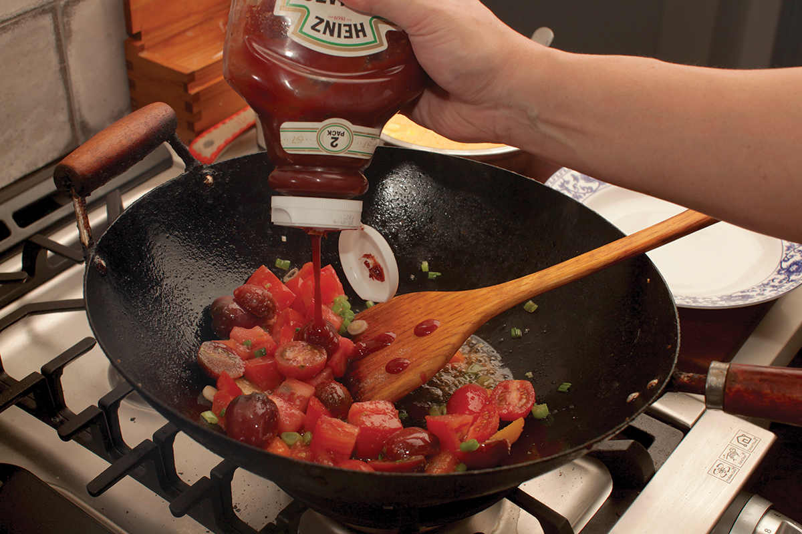
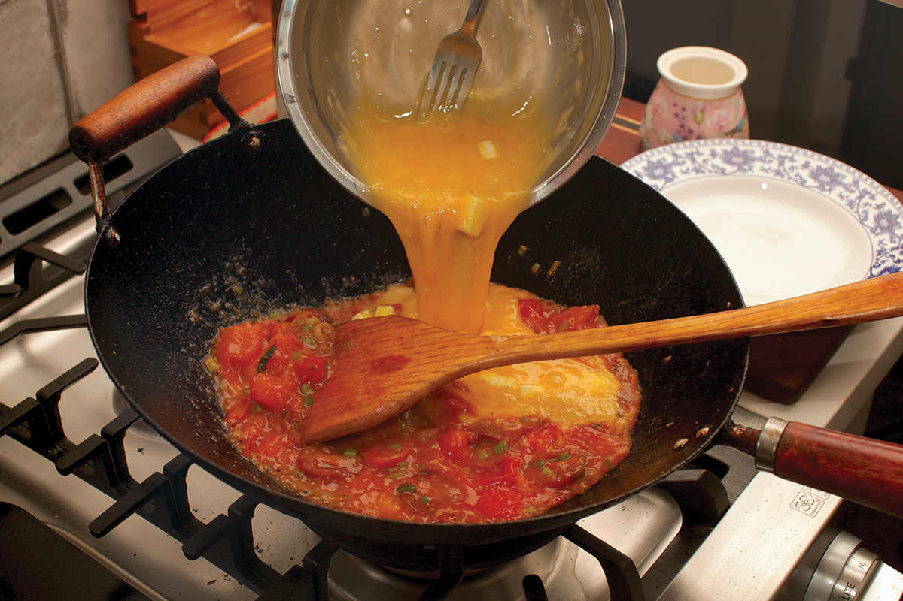
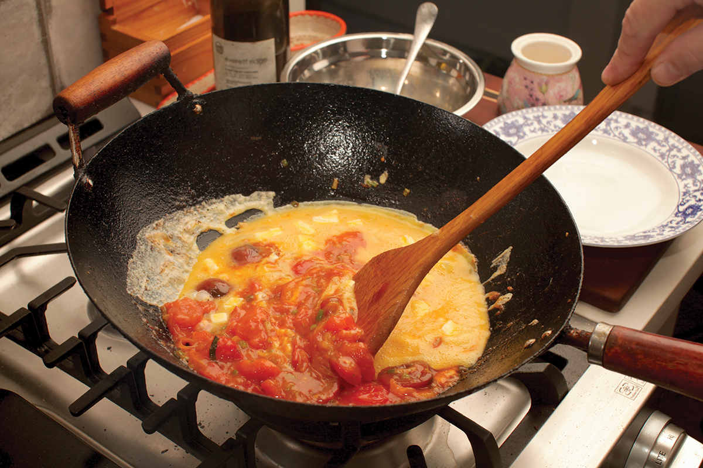

HOME-STYLE TOMATO AND SCRAMBLED EGGS
My wife, Adri, grew up in Colombia, and until she moved to the United States her exposure to Chinese food was relatively limited. So I was surprised when one morning I woke up to find her cooking scrambled eggs with tomatoes and scallions. It was a dish I was familiar with from my own childhood, when my mother would occasionally cook it for a quick lunch on Saturday afternoons between my Japanese school and music school classes. She, in turn, learned the dish from her mother, my grandmother, Yasuko, who would serve it to her when she was a toddler. Yasuko called it to-tama, a play on the word tomato and the Japanese word for egg, tamago.
In China, it’s called fanqie chao dan (literally “tomato fried egg”), and it’s a dish that is simultaneously ubiquitous—all children are familiar with their own home-cooked version—but also hidden to casual visitors. It won’t appear on restaurant menus, as it isn’t a restaurant dish. It’s unlikely to appear in a Chinese cookbook just as it would be unlikely to find a recipe for buttered toast in an American cookbook. Francis Lam wrote an article for the New York Times about it, in which he described it as “like air, present and invisible [in Chinese cooking].”
As it turns out, the Colombian version of the dish, called huevos pericos, shares no heritage with the Chinese, but it’s telling that people in both countries independently discovered the sweet-tart-savory-tender magic of tomatoes and eggs cooked together. It doesn’t stop there. It’s in Italy in Roman uova all’Amatriciana and Neapolitan ova’ ‘mpriatorio (eggs in purgatory). In France you find oeufs Provençal. It’s the same flavors you’ll find in the Arab dish shakshuka, the related Turkish dish menemen (though in the case of menemen, the addition of onions is a hotly contested subject), the Parsi tomato per eedu, or Mexican huevos rancheros. There’s even a strong vocal minority of folks who will die on the hill that ketchup belongs on a fried egg breakfast sandwich.* The combination of eggs and tomatoes is one that crosses cultural lines and enters the realm of the universally delicious.





As a home-style Chinese dish, there’s a huge amount of variation in technique (and don’t let anyone tell you there’s a right or wrong way to do it—the right way is the way you like it). My favorite way to make it is to think of it almost as a tomato-and-egg sauce for rice, rather than scrambled eggs with tomatoes. As such, the technique I use is somewhere in between the Creamy Layered Scrambled Eggs (here) and Slippery Eggs (here).
I start by gently stir-frying the whites of a couple scallions in the wok before adding sliced tomatoes. Roma or small cherry tomatoes work best here, as they have a higher pectin content than larger beefsteak tomatoes. More pectin results in a thicker, more concentrated sauce (the same reason Roma-style tomatoes like San Marzano are so revered for Italian pasta sauces), which keeps the dish from being watery.
Once the tomatoes have broken down and started to concentrate, it’s time to transform them into a sauce. For this, I first add a cornstarch slurry, which thickens up the juices and suspends the chunky bits of tomato. While it’s perfectly fine to stop right there, if you want to really boost tomato, use a trick I learned from KP Kwan of the YouTube channel Taste of Asian Food: add a dash of ketchup. Yes, ketchup! My old friend and colleague Chichi Wang suggests the same in her recipe on Serious Eats. As she says, “We could go back and forth all day about whether or not ketchup oughta be a legitimate condiment in Chinese cuisine. My feeling . . . is that ketchup makes the tomatoes taste more like themselves,” and she’s right. A small dab of ketchup adds concentrated tomato flavor while also adding some sweetness and tartness to balance out the dish.
At this point, many recipes will have you remove the tomato sauce from the wok to cook the eggs before stirring the sauce back in. I prefer to drizzle my eggs—seasoned with a dash of fish sauce and moistened with cubes of butter and a cornstarch slurry—directly into the simmering tomato mixture, gently folding them until the entire thing is silky and tender.
|
Yield Serves 2 to 3 with rice |
Active Time 15 minutes Total Time 15 minutes |
You can omit the fish sauce and use ½ teaspoon salt and an optional ¼ teaspoon MSG in its place. You can also omit the butter, but I don’t recommend it.
INGREDIENTS
For the Eggs:
6 large eggs
2 teaspoons (10 ml) fish sauce (optional; see Notes)
2 tablespoons (about 30 g) unsalted butter, cut into small cubes (see Notes)
For the Cornstarch Slurry:
2 teaspoons (6 g) cornstarch
¼ cup (60 ml) water
For the Stir-Fry:
2 tablespoons (30 ml) peanut, rice bran, or other neutral oil
4 scallions, chopped, dark green parts reserved separately
8 to 12 ounces (230 to 340 g) ripe Roma or large cherry tomatoes, cut into bite-sized chunks (about 5 Roma tomatoes or 1 pint cherry tomatoes)
Kosher salt and freshly ground white pepper
1 tablespoon (15 ml) ketchup
1 teaspoon (4 g) sugar
DIRECTIONS
1For the Eggs: In a large bowl, beat the eggs very thoroughly with a whisk, a fork, or a pair of chopsticks. This process should take at least 1 minute, and when you are done, the egg should be completely smooth. Test this by lifting your utensil up out of the eggs, letting them drizzle back down. There should be no visible strands or lumps. If there are, keep beating.
2For the Cornstarch Slurry: Combine the cornstarch and water in a separate small bowl and stir with a fork until the cornstarch is dissolved.
3Add half of the cornstarch slurry (set aside the other half for now), the fish sauce, and the butter to the eggs and beat to incorporate (the butter will stay solid at this stage).
4For the Stir-Fry: Heat the oil in a wok over high heat until shimmering. Add the scallion whites and pale greens and cook, stirring, until aromatic, about 15 seconds. Add the tomatoes, a pinch of salt, a pinch of white pepper, the ketchup, and the sugar and cook, stirring, until the tomatoes break down and release their juices but still have some of their shape, about 2 minutes. Stir the remaining cornstarch slurry and add it to the wok.
5As soon as the sauce has thickened, add the beaten egg mixture and cook, folding and occasionally stirring gently, until the eggs are barely set and the sauce is silky, rich, and no longer watery, about 1 minute. Fold in the scallion greens, season to taste with salt and white pepper, transfer to a serving bowl, and serve immediately with steamed rice.
*They are wrong.